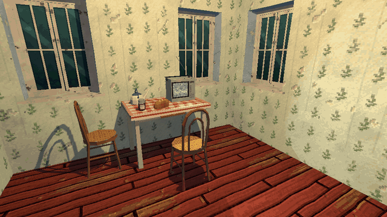

Tutorials › Switch a Whole House from Lived In to Abandoned
How to Switch a Whole House from Lived In to Abandoned in Godot 4
Every prop under a house swaps for the same prop years later, in place, and the house's walls and windows age with them: one property, one node.

An abandoned house is scarier when the player has seen it lived in. If every prop comes twice, as it was the night before the house was left and the same prop years later, with one origin, a whole house can switch with one property. This node reads the pairs from a JSON file once, and setting its state swaps every prop under the house for its twin in place: the same transform, the same name, the same place among its siblings. Then it hands the state on to any node in the house that has a state and an apply() (a re-finish script, so the walls age with the furniture), and to the house itself when the house is a builder with a state and a build().
Script: house_years.gd (MIT) · Godot 4.3 or newer · its folder on GitHub
How to use it
- Add a
Nodeunder the house (or under a row of houses) and attachhouse_years.gd; its class isHouseYears. It switches every prop under its parent. - Give your props two scenes each, with one origin, in
<pack>/props/:chair.tscnlived in and its twinchair__abandoned.tscn(the abandoned one's file name holdsabandoned). Pair them in<pack>/data/props.jsonas{"props": [{"pairs": {"chair": "chair__abandoned"}}]}. A prop's pickup, use and rigid scenes pair the same way when both sides have them:loaf__pickup.tscnwithloaf__abandoned__pickup.tscn. - Set
packto the folder that holdsdata/props.jsonandprops/. - Set
statetolivedorabandoned: every prop under the house swaps at once. Switch behind a fade or a blink, and callapply()again after you add props at run time. A prop the player took is gone, so it stays gone when the house switches back.
What it needs
- Godot 4.3 or newer (the Compatibility renderer is enough).
- Props as pairs of scenes, lived in and abandoned, with one origin, and a
data/props.jsonthat pairs them. - For the walls to age too: a node in the house with a
stateand anapply()(a re-finish script).
Try it free
The Cordatix PSX Horror Free Sampler carries this script as cordatix/psx_horror_village_props/sampler/house_years.gd, with six of the village's props in both states (a kitchen table and chair, a portable television, a kettle, a jar of preserves and a loaf, the jar and the loaf to take) and the re-finish script surface_finish.gd, so a wall ages with them. In that project use the file as it is, or drop the class_name line from a copy of your own: Godot takes each class name once. The pack's 107 props come in both states, with things to take and to open, ready-made scenes and the kit's seven ready houses furnished.
How it was tested
In Godot 4.3 and 4.7.2, in the free sampler's project, on stand-in props and on the sampler's six props by a wall of the free village pieces with the sampler's re-finish script: abandoned, every prop is its twin where it stood, turned as it was, a pickup stays a pickup, the wall wears its abandoned textures, nothing is doubled, a thing the player took stays gone when the house switches back, and a house builder is rebuilt once in the new state.
The code
class_name HouseYears
extends Node
## How to Switch a Whole House from Lived In to Abandoned in Godot 4
## Cordatix Godot 4 PSX tutorials, MIT licensed: https://github.com/GoldenSparrow-Dev/cordatix-godot-psx-tutorials
## The devlog: https://cordatix.itch.io/cordatix-psx-horror-village/devlog/1747801/how-to-switch-a-whole-house-from-lived-in-to-abandoned-in-godot-4-cordatix-psx-horror-village-11
## Switch a whole house between lived in and abandoned (Godot 4.3+). MIT licence.
## Every prop of Cordatix PSX Horror Village comes twice: as it was the night before the village was left, and
## the same prop years later, both with one origin. data/props.json pairs each lived scene with its abandoned twin. Put
## this node under a house: setting `state` swaps every prop under the house for its twin in place, and hands the
## state on to any re-finish node in the house (a node with a `state` and an `apply()`, such as the free sampler's
## surface_finish.gd), so the walls age with the furniture, and to the house itself when it is Cordatix PSX Horror
## Village's house builder (a `state` and a `build()`): its windows break and board with the years.
## The pack's folder: its data/props.json and props/ scenes.
@export_dir var pack := "res://cordatix/psx_horror_village_props"
@export_enum("lived", "abandoned") var state := "lived":
set(v):
state = v
if is_inside_tree():
apply()
var _twin := {} # scene path -> its other side's scene path, both ways
func _ready() -> void:
var data: Dictionary = JSON.parse_string(FileAccess.get_file_as_string(pack + "/data/props.json"))
for p in data["props"]:
for lived in p["pairs"]:
var dead: String = p["pairs"][lived]
for kind in ["", "__pickup", "__use", "__rigid"]:
var a := "%s/props/%s%s.tscn" % [pack, lived, kind]
var b := "%s/props/%s%s.tscn" % [pack, dead, kind]
if ResourceLoader.exists(a) and ResourceLoader.exists(b):
_twin[a] = b
_twin[b] = a
apply()
## Swaps every prop under the parent onto the side `state` names; returns how many it swapped.
func apply() -> int:
var n := 0
for node in get_parent().find_children("*", "Node3D", true, false):
var path: String = node.scene_file_path
if not _twin.has(path) or _is_side(path) == state or _gone(node):
continue
var twin: Node3D = (load(_twin[path]) as PackedScene).instantiate()
twin.transform = (node as Node3D).transform
var parent := node.get_parent()
var at := node.get_index()
var nm := node.name
node.name = String(nm) + "_old"
parent.add_child(twin)
parent.move_child(twin, at)
twin.name = nm
node.queue_free()
n += 1
for f in get_parent().find_children("*", "", true, false):
if f != self and f.has_method("apply") and "state" in f:
f.set("state", state)
var house := get_parent()
if house.has_method("build") and "state" in house and house.get("state") != state:
house.set("state", state)
house.call("build")
return n
func _gone(node: Node) -> bool:
while node != null:
if node.is_queued_for_deletion():
return true
node = node.get_parent()
return false
func _is_side(path: String) -> String:
return "abandoned" if path.get_file().get_basename().contains("abandoned") else "lived"
The devlog and the pack
The step-by-step walkthrough is the devlog How to Switch a Whole House from Lived In to Abandoned in Godot 4 (Cordatix PSX Horror Village 1.1) on itch.io, written for Cordatix PSX Horror Village, a PS1-style asset pack by Cordatix for Godot 4, Unity, Unreal and Blender.